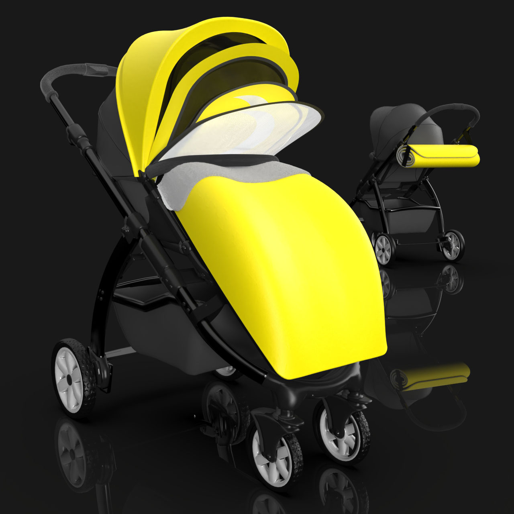

Design, DFM, manufacturing strategy, and concept-to-manufacture decision support across multiple sectors and technologies.
About
Product design help without the black box.
I am Andrew Hunter, a product design engineer and the founder of Orion Design in Belfast, Northern Ireland. I help people turn physical-product ideas into clearer designs, useful prototypes, manufacturable parts, and better-informed production decisions. Some clients arrive with little more than a sketch; others already have engineers, CAD, suppliers, and a stubborn problem that needs an experienced outside view.
MEng
Product Design & Development, Queen's University Belfast
Since 2010
professional product-design experience across consultancy, engineering, and manufacture
IDI recognised
award-winning and finalist project experience across consumer, environmental, industrial, and medical design
Experience you can inspect
A practical engineering background, not a generic innovation pitch.
My background combines product design, mechanical detail, prototyping, design for manufacture, and manufacturing-facing development. Public profile information includes an MEng in Product Design & Development from Queen's University Belfast and IDI-recognised project work. View the public LinkedIn profile →
Lifecycle assessment, embodied carbon, material strategy, and systems-level thinking integrated into product design decisions.
Manufacturing economics, route-to-market analysis, startup planning, and investor-facing business model validation.
Selected experience
Product development across start-ups, specialist manufacturers, medical technology, industrial equipment, and established engineering businesses.
Across consultancy, in-house engineering, and independent product-development work, my experience includes projects involving the organisations below. The work ranges from early concept definition and prototypes through detailed mechanical design, DFM, supplier sourcing, manufacturing support, and product-family development.
Kingspan
Cirdan Imaging
Sepha
TASI Group
Cumulus Neuroscience (formerly BrainWaveBank)
Rolltack
The Blinky Company
Causeway Sensors
BNL Productions
Survitec
Kraydel
TriMedika
Katchy Hooks
MLT Industries
Clients and manufacturing partners have been based in Northern Ireland, Great Britain, the Republic of Ireland, France, Germany, Sweden, Poland, the United States, China, Taiwan, India, Australia and New Zealand, alongside companies with a global presence. A number of these relationships span confidential development work, so public examples focus on the parts of the product-development journey that can be shown responsibly.
What clients come for
Orion Design helps when a product has promise but key decisions are still unresolved: concept direction, product architecture, route to manufacture, assembly burden, sustainability trade-offs, or whether the commercial case is strong enough to continue. You can get in touch for a specific question, practical project help, or more strategic support.
What the work should make clearer
The aim is to make the next decision easier and cheaper: what to prototype, what to simplify, what to validate with suppliers, and where not to commit too early. Better choices now prevent expensive reversals later.
Representative product range
Examples that explain the breadth of the work.
The range matters because the same decision patterns appear across sectors: define the product clearly, reduce avoidable complexity, and match development effort to the real opportunity.

Enclosure architecture used to protect technical alignment without over-specifying the outer housing
Scientific and specialist hardware
Projects where usability, packaging, and product credibility need to sit on top of demanding technical constraints.

Cross-disciplinary development spanning soft goods, geometry, ergonomics, and prototyping
Products with multiple disciplines in play
Development work that depends on geometry, structure, surface finish, and user behaviour rather than one isolated design task.

Plastic-part geometry shaped around tooling, assembly, and production constraints
Products shaped by production reality
Design work that gets stronger when manufacturing assumptions, tooling logic, and assembly implications are made explicit early.
Working style
Engineering clarity before expensive commitment.
The strongest product decisions usually happen before tooling, launch spend, or production complexity become hard to reverse.
Make the trade-offs visible.
Expose cost, manufacturability, product value, and lifecycle impact early enough that the product direction can still improve.
Translate ideas into manufacturable detail.
Move from concept intent into CAD, prototyping, production planning, and supplier-ready thinking with fewer hidden assumptions.
Bridge technical and commercial language.
Use tools and shared decision criteria so founders, engineers, and product teams can discuss the same questions with the same structure.